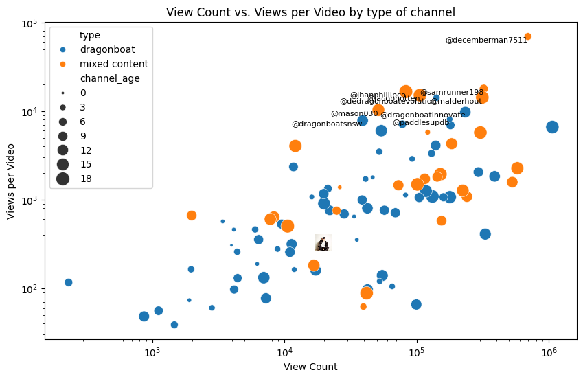
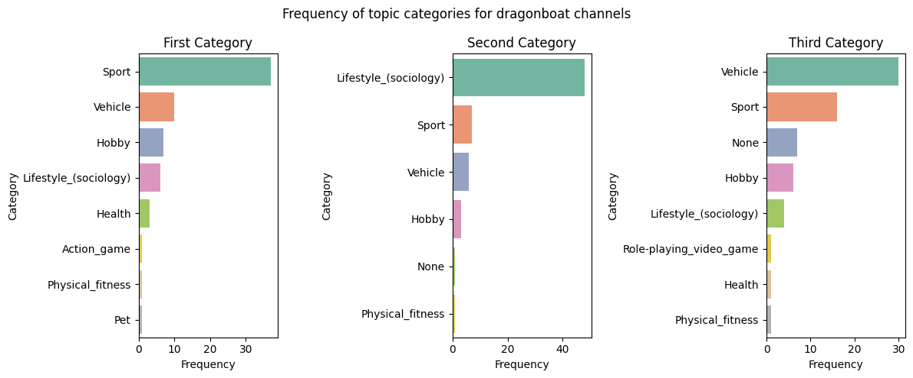
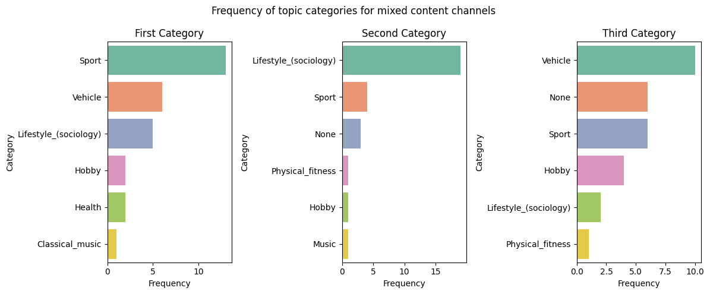
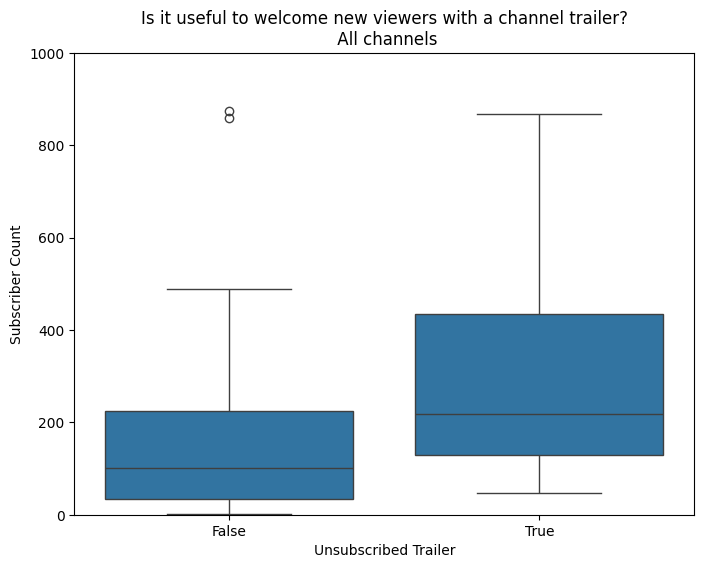
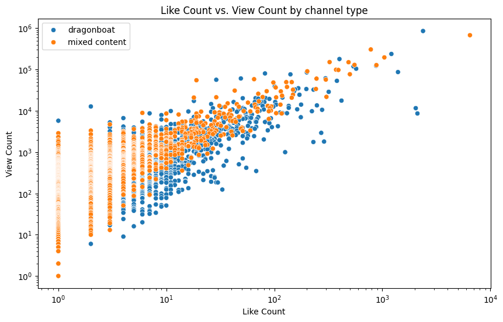
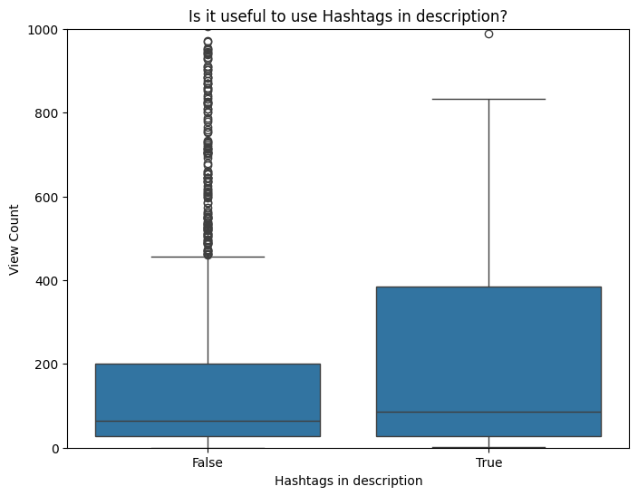
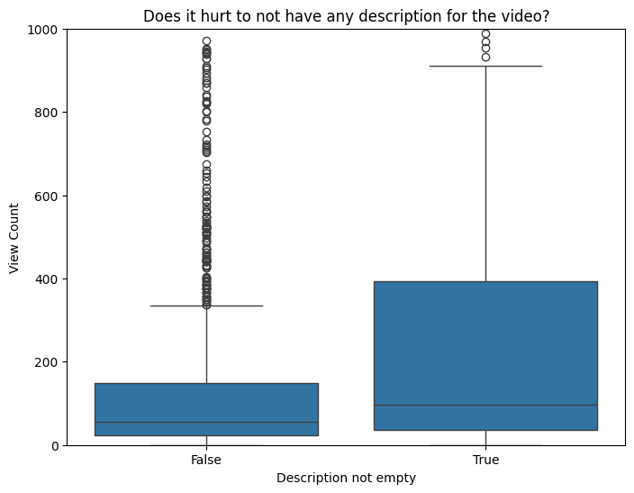
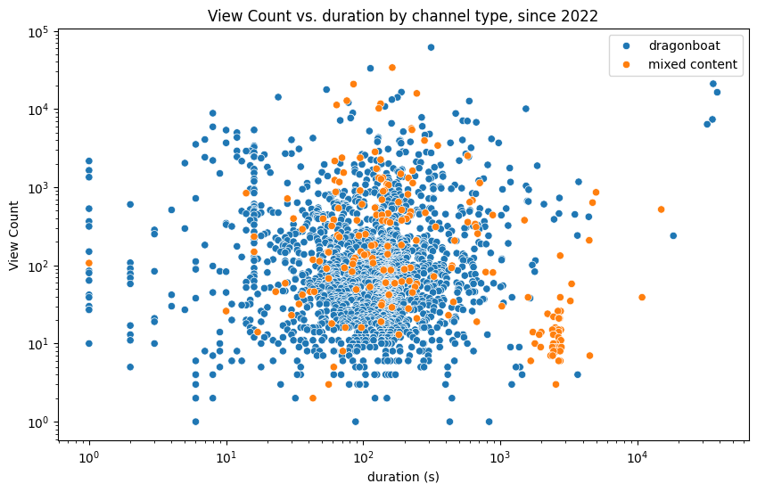
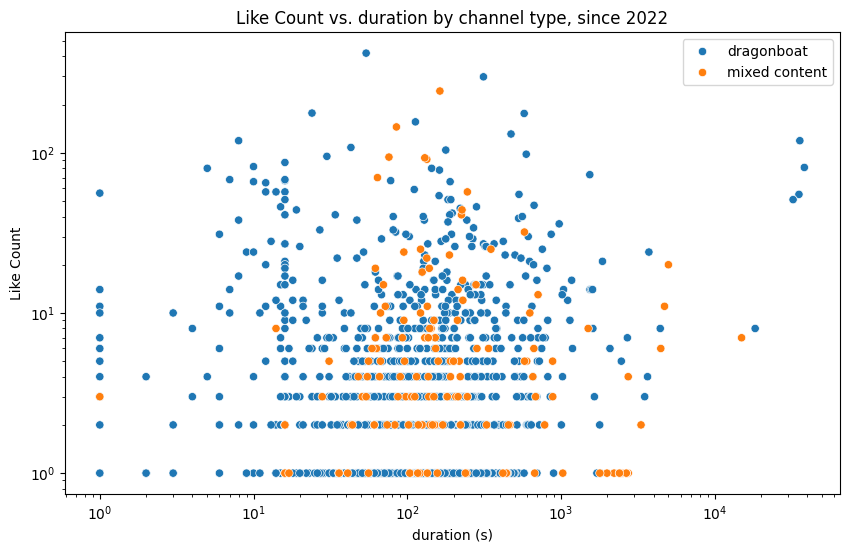
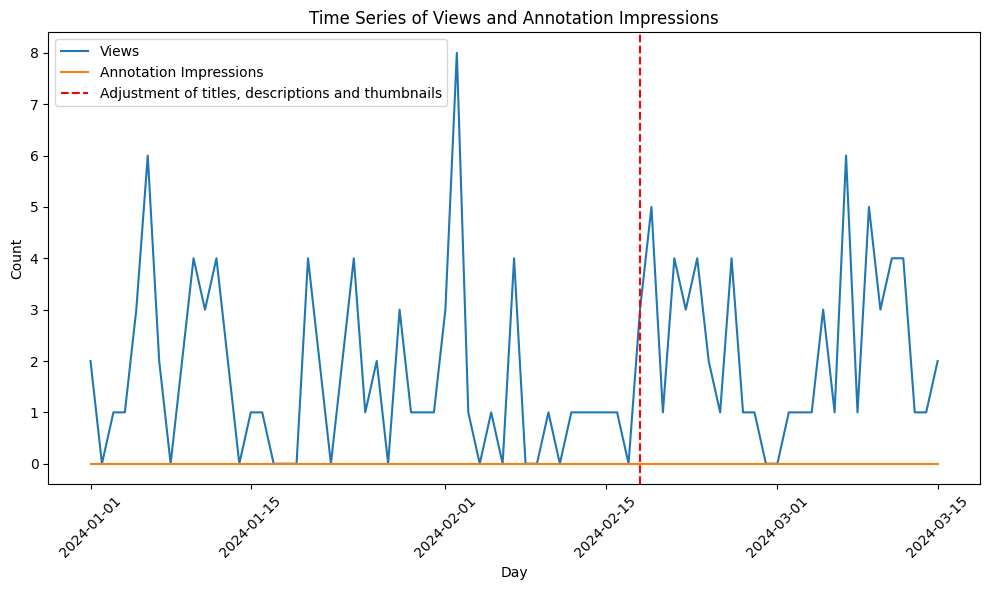

Find the code for my analysis on my Github repo
Introduction:
As a passionate amateur dragonboat paddler and video editor, I have over the years created more and more videos (currently 61 published) to show the world the competitions and travels of my awesome team. Over time my editing skills have increased through hands-on training, following YouTube tutorials of other creators and a great Udemy course, I have advanced from editing on beginner tools like the Premiere Elements to DaVinci Resolve, a tool also used by media professionals. Further, I have also invested in the lifetime access to royalty-free music so that I can have new soundtracks that could also be fine if I ever managed to monetize my channel.
Yet, this improvement in video quality did not translate into the traffic I was hoping for, so I concluded the YouTube algorithm is not promoting my content enough. I decided to investigate this and use my Data Science skills to solve the problem. In this blog post, I’ll share insights from my analysis and explore how YouTube’s algorithm impacts the visibility and success of dragonboat channels.
Exploring Channel Data:
I started my analysis by going through the rabbit hole of searching for dragonboat content on videos, subscribing to channels, browsing my feed and repeating. In the end I collected 66 channels fully dedicated to the topic of dragonboat or even belonging to a specific team, and 29 channels which contained not just videos on paddling, but also other videos, similar to my channel. As far as country information for the channels was available, I gathered channels from around the world, with at least 11 from the US and Canada, 4 from Australia and New Zealand, at least 8 from South-East Asia (Taiwan, Philippines, Singapore, Indonesia) and at least 5 from Europe.
Using Python, I collected data on these channels as a starting point for further analysis on the contained videos (as for this we need the playlist ID for the channel uploads), but also to get aggregate view and subscriber counts, information on whether the channels have a channel trailer for unsubscribed visitors and how YouTube has categorised them.
Looking simply at aggregate view counts and the ratio of view count per video (to control for the fact that some channels are older than others), does not reveal that solely dragonboat-focussed channels generated more views than the channels with mixed content. There are channels of both types which have generated more than 100,000 views and on average more than 1,000 views per video, clearly outperforming my channel (at 21K views, i.e. 350 per video).

In terms of subscriber counts, three channels have surpassed and other three are close to the mark of 1,000 subscribers, which is one of the requirements for joining the YouTube partner program which allows you to generate ad revenue.
The Impact of Channel Categorization:
Then, I decided to dig deeper into the issue of topic categories. In the analysis above I made the decision to group channels into ‘dragonboat’ and ‘mixed content’, but (how) does the YouTube algorithm categorize them?
Checking the frequencies of categories within the first three topic category lists of the channels reveals that most ‘mixed content’ channels in my sample are categorized similarly to the pure ‘dragonboat’ channels, having as first category ‘Sports’, as second category ‘Lifestyle’ and as third category - if available - ‘Vehicle’ (for boat).


By contrast, the topic categories returned for my channel are:
- Hobby
- Sport
- Tourism
- Lifestyle
So it seems that I am more mixed than these mixed channels. On my channel I also feature travel videos and some pure aerial content drone videos, which appears to confuse the algorithm when deciding which content to show on a user’s feed.
Professional YouTuber also advise to have consistent content in one channel. Besides the categorization, the YouTube algorithm also promotes the content of channel based on its previous success in terms of the count of viewers and subscribers, how many users click on impressions of a video in their feed (the so-called ‘click-through-rate’) and how long the viewers are actually watching the video (‘retention’). While I personally like paddling, surfing, skiing, travelling, obstacle course racing, hiking and flying drones, other people may not necessarily like all of these activities together. So someone who has seen and liked my ski-trip videos will be shown my dragonboat videos in their feed, but will not be interested and thus reduce my click-through rate, or click and then stop the video after a few seconds, hurting my retention rate.
Besides the topic categories, I looked into another component of channels: some channels greet unsubscribed new viewers on their channel page with a channel trailer that introduces what the channel is about and raises a call to action to subscribe. As in the public data API I cannot retrieve historical information, I can only check if there is a correlation between the existence of a trailer and the subscriber count. So it might be that as channels have gained more subscribers, they later took the time to add a channel trailer, rather than the trailer nudging more users to click subscribe, but the correlation nonetheless looks quite strong. So it might be a good idea for me to add a channel trailer, as currently I don’t have one.

Insights from Video Data:
Further investigation into individual videos uncovered valuable insights. Both groups of channels contained around 10,000 videos, on which I could retrieve useful statistics on views, likes, shares, as well as information on their descriptions, or the duration of the video. Looking at individual videos, it seems that videos from dragonboat channels somewhat outperform those from mixed-content channels in terms of views and likes.  Additionally, the presence of hashtags and descriptive content in video descriptions positively correlated with view counts, indicating their importance in attracting viewership. Since the YouTube algorithms has been changed over the years and the use of hashtags is also quite recent, I restricted that analysis to only videos published since 2022. In both cases the inter-quartile range of the video views ranges much higher if the video has a description and higher if the description contains hashtags for search.
 
Lastly, I analyzed whether viewers of dragonboat videos prefer videos of a certain duration, as mine are often on the longer side, especially for those showing international trips with some travel content at the beginning.
For both views and likes there does not appear to be any siginficant correlation with the duration of the video, but all in all there is a sweet spot in which most of the videos simply are, with the middle 50% of videos being in the range of one to three minutes long.


Monitoring my own channel using the YouTube Analytics API:
Already some months ago I started becoming more interested in the issue and asked ChatGPT to improve my video descriptions in terms of search engine optimization (SEO). For some videos that did not yet have custom thumbnails I also added them. These changes occurred around the 18th of February 2024 so I wanted to check on the YouTube Analytics API whether this had an effect. Unfortunately the metric of ‘Annotation Impressions’ - the presentation of a clickable thumbnail to a video in a user’s feed, which is visible without a problem in the YouTube Studio App, cannot be retrieved via the API. In terms of overall views for these older videos with improved descriptions and thumbnails the effect appears still marginal, but I will keep an eye on the developments.

Annotation impressions for all my videos did increase when I made the changes in titles, descriptions and thumbnails (third spike), but this could still have been boosted by the prior publication of two other videos (previous two spikes).
My learnings:
In conclusion, my analysis offers valuable insights into the complexities of YouTube’s algorithm and its impact on content visibility.
Moving forward, I aim to leverage these insights to refine my content strategy and enhance the overall viewing experience for dragonboat enthusiasts worldwide.
- Most importantly this means that I will publish new content on dedicated channels aligning with the YouTube topic categories. For this I have already created a new dragonboat channel for my team Frankforter Dorschenanner ✅. So far I will keep the existing videos on the old channel, as the migration of videos will reset the views and likes and I am not yet willing to do that.
- I will try to shoot a little channel trailer 🎥 and make sure descriptions and titles are search-optimized and thumbnails exciting enough to make people click!
- In particular for typical dragonboat regattas with multiple races, I will create separate ‘raw’ videos for each race, as this aligns better with the length viewers are used to rather than one longer video with chapters. Also, this strategy helps my statistics for becoming a YouTube partner, as one should publish at least three videos in the last 90 days.
Let’s make 2024 viral! 🤩